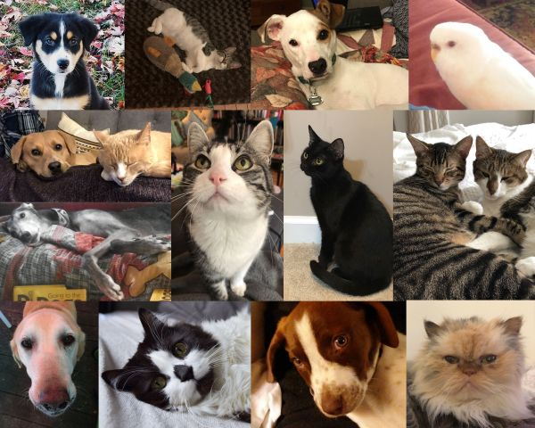
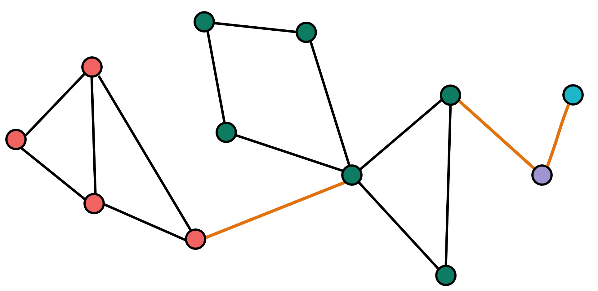

Graph Representation Learning
From Graph ML to Temporal GNNs
![]()
Outline
1️⃣ Introduction to Deep Learning
2️⃣ Graph Representation Learning
Introduction to Deep Learning
- Introduction to Deep Learning
Introduction to Deep Learning
Introduction to Deep Learning:
1.1 Problem Setting
1.2 The “Deep Learning” Solution
1.3 Gradient Descent
1.4 Deep Learning on Graphs
Problem Setting #1
Introduction to Deep Learning
- Usual problem in Mathematics/Physics: given a “setting”, compute a quantity/functional form;
- Ex1: Given hydrogen atom, compute energy levels;
- Ex2: Given two points on a curved surface, find the equation for the shortest path;
- In all cases, a more or less intuitive but explicit sequence of operations allows for a “proof”;
But what if a problem does not admit a proof? E.g. :
The intuition required surpasses human capability;
The problem is not completely specified.
Problem Setting #2
Introduction to Deep Learning
EXAMPLE: Dog vs Cat classification
Other Tasks: Text Classification, Image Segmentation, Speech to Text, Scientific Machine Learning, Law Discovery, Anti Money Laundering…
Problem Setting #3
Introduction to Deep Learning
What we have:
- A set of images (\(n \times n\) arrays), whose labels we know: \[\mathcal{D} = \left\{ (X_1, "dog"), (X_2, "cat"), ..., (X_n, "dog") \right\}\]
- A set of images (\(n \times n\) arrays), whose label we’d like to correctly predict: \[\mathcal{D'} = \left\{ X_{1'}, X_{2'}, ..., X_{n'} \right\}\]
What we want:
- A function \(f^*\) that maps images to their correct label, both in train and test sets.
Similarly for the other tasks.
These problems are clearly very complicated and underspecified.
The “Deep Learning” Solution
Introduction to Deep Learning
One fits them all:
Write a function family \(f_{\vec{\theta}}\) “flexible enough” to include the target function \(f^*\), then find \(\vec{\theta}^*\) s.t. \(f_{\vec{\theta}^*} \approx f^*\)
In our case, we’d look for a \(f_{\vec{\theta}}(X_i) \in \{"dog", "cat"\}\) such that mappings are correct;
Very expressive functions: Neural Networks \(f_{\vec{\theta}} = \sigma (W_0 \sigma(W_1 \sigma(...(\sigma(W_n X)))))\);
Parameters \(\vec{\theta} = (W_0, ..., W_n)\) iteratively updated via Gradient Descent.
Gradient Descent
Introduction to Deep Learning
- Choose differentiable point-wise “loss” e.g. (“dog”/“cat” \(\iff y_i = 1/0\)):
\[\mathcal{l}(y_i, f_{\vec{\theta}}(X_i)) = P(y_i | X_i ; f_{\vec{\theta}}(X_i) ) = f_{\vec{\theta}}(X_i)^{y_i} (1-f_{\vec{\theta}}(X_i))^{1-y_i}\]
- Define dataset-wise loss:
\[\mathcal{L}(D, f_{\vec{\theta}}) = - ln \left( \prod\limits_{i = 1}^n \mathcal{l}(y_i, f_{\vec{\theta}}(X_i)) \right)\]
- Iteratively update parameters:
\[\vec{\theta} \leftarrow \vec{\theta} - \nabla_{\vec{\theta}} \mathcal{L}(D, f_{\vec{\theta}})\]
Until convergence.
Deep Learning on Graphs
Introduction to Deep Learning
Given a Graph:

Possible Tasks:
Node Classification;
Link Prediction/Classification;
Graph Classification;
Subgraph Matching;
…
Q: What “functional family” \(f_{\vec{\theta}}\) do we use for Deep Learning on (Temporal) Graphs?
Graph Representation Learning
Graph Machine Learning
Graph Deep Learning
Temporal Graph Deep Learning
Graph Representation Learning
Graph Machine Learning:
1.1 Early Models
1.2 Weisfeiler-Leman Kernel
2. Graph Deep Learning
2. Temporal Graph Neural Networks
Early Models
Graph Representation Learning | Graph Machine Learning
- Before Deep Learning, features were human-engineered (Machine Learning);
- Early works can be organized in node/edge/graph-level features;
Node-level:
Features: Degree, Eigenvector, Betweeness, Closeness centralities & Clustering Coefficient (CC)/Graphlet Degree Vector (GDV)
RW-based: PageRank, DeepWalk, Node2Vec (not inductive!);
Edge-level: Local/Gobal Neighborhood overlap (Katz Index)
Graph-level: (Causal) Anonymous Walks, Graphlet Kernel, Weisfeiler-Leman Kernel.
Weisfeiler-Leman Kernel #1
Graph Representation Learning | Graph Machine Learning
Def.(Graph Isomorphism) : Two graphs \((V_1, E_1)\) and \((V_2, E_2)\) are isomorphic \(\iff\) \[\exists \text{ bijection }f: V_1 \rightarrow V_2 | (u,v) \in E_1 \implies (f(u), f(v)) \in E_2\]
Obs. : Determining \(f\) is extremely expensive \(\implies\) need for approximate algorithms \(\implies\) WL-kernel
Weisfeiler-Leman Kernel #2
Graph Representation Learning | Graph Machine Learning
WL-Kernel:
Assign initial color \(c^{(0)}_v\) to each node \(v\);
Iteratively refine colors via: \[c^{(k+1)}_v = HASH\left(c^{(k)}_v, \{ c^{(k)_u | u \in N(v)} \} \right)\]
Terminate when colors stabilize (#nodes iterations maximum);
Assign to each graph the empirical color distribution (histogram)


Weisfeiler-Leman Kernel #3
Graph Representation Learning | Graph Machine Learning
Obs. WL-Kernel cannot distinguish all non-isomorphic graphs e.g.:

And computes same color for different nodes:

Obs. : GNNs will be differentiable versions of \(HASH\) \(\implies\) less expressive.
Graph Representation Learning
Graph Machine Learning
Graph Deep Learning
2.1 Historical Derivation of GNNs
2.2 Message Passing Framework
2.3 Expressivity of GNNs
3. Temporal Graph Deep Learning
Historical Derivation of GNNs #1
Graph Representation Learning | Graph Deep Learning
Disadvantages of previous methods:
- Inherently transductive;
- Do not incorporate node/edge/graph features;
- Computed node/edge/graph features are task-independent;
- Not End-to-End.
\(\implies\) Need for Graph Deep Learning i.e. GNNs!
Historical Derivation of GNNs #2
Graph Representation Learning | Graph Deep Learning
Historical derivation of GNNs:
- Simultaneous discretization of a Riemannian Manifold \(\mathcal{M}\) & Laplace-Beltrami operator yields a graph \(G\) and its laplacian \(L = D - A\)1
- \(\hat{L} = D^{-\frac{1}{2}} L D^{-\frac{1}{2}} = I - \hat{A}\)’s eigenvectors \(U\) used to define the Graph Fourier Transform: \[\mathcal{F}(\vec{x}) = U^{T}\vec{x}\]
- \(\mathcal{F}\) used to define Graph Convolution:
\[\vec{g}_{\vec{\theta}} * \vec{x} = U \vec{g}_{\vec{\theta}} U^T \vec{x}\]
- Interpret \(\vec{g}_{\vec{\theta}}\) as function of \(\hat{L}\)’s eigenvalues \(\hat{\Lambda}\), and approximate using Chebishev’s polynomials: \[\vec{g}_{\vec{\theta}} \approx \sum\limits_{k = 0}^{K}\theta_k T_k(\hat{\Lambda})\]
- Truncate to first-order, group parameters, renormalize, apply non-linearity and generalize to matrices: \[Z \approx \text{ReLU}\left(\tilde{A}X\Theta \right)\] where \(\tilde{A} = D^{-\frac{1}{2}} (A + I) D^{-\frac{1}{2}}\)2
Obs. Alternative approach: MPNNs3
Message Passing Framework #1
Graph Representation Learning | Graph Deep Learning
INTUITION: We’d like to produce useful representations for each node also taking into account their neighbors (ref. CNNs).


Message Passing Framework #2
Graph Representation Learning | Graph Deep Learning
MPNN framework prescribes that a GNN is a stacking of layers of the form:
\[\vec{h}^{(k+1)}_v = \vec{\text{COMB}}_k\left(\vec{h}^{(k)}_v, \vec{\text{AGGR}}_k\left( \left\{ \vec{\text{MSG}}_k\left(\vec{h}^{(k)}_v, \vec{h}^{(k)}_u, e_{uv} \right) | u \in N(v) \right\} \right)\right)\]

Message Passing Framework #3
Graph Representation Learning | Graph Deep Learning
Kipf’s convolution recovered by:
\[\begin{cases} \vec{\text{COMB}}_t &= \text{ReLU}(\cdot) \text{ (no self-information)} \\ \vec{\text{AGGR}}_t &= \sum \\ \vec{\text{MSG}}_t\left(\vec{h}^{(t)}_v, \vec{h}^{(t)}_u, e_{uv} \right) &= \frac{W_t}{\sqrt{deg(u)}\sqrt{deg(v)}}\vec{h}^{(t)}_u \end{cases}\]Obs. All architectures within this framework are permutation-invariant;
Other architectures are GAT, GraphSAGE, SGCN, etc1
GNN Expressivity #1
Graph Representation Learning | Graph Deep Learning
- We may choose to quantify GNN “expressivity” by the number of (sub)graphs it may distinguish when no features are present;
- In this case, GNNs are at most expressive as the WL-kernel by construction;
- GNNs may match WL-kernel \(\iff \vec{\text{COMB}}_t \text{, } \vec{\text{AGGR}}_t\text{, } \vec{\text{MSG}}_t\) are all injective on their domains;
GNN Expressivity #2
Graph Representation Learning | Graph Deep Learning
- By Kolmogorov-Arnold’s theorem1, every symmetric function can be represented as:
\[f(x_1,...,x_n) = \rho \left(\sum\limits_{i = 1}^{n} \phi(x_i) \right) \text{where $\rho \text{ and } \phi$ are injective nonlinearities}\]
- Thus, by the Universal Approximation Theorem, the following architecture2 has a chance to match WL expressivity:
\[\vec{h}^{(k+1)}_v = \text{MLP}\left( (1+\epsilon) \vec{h}^{(k)}_v + \sum\limits_{u \in N(v)}\vec{h}^{(k)}_u \right)\]
- More expressive GNNs may be obtained by mimicking k-WL kernel, or by extending the MPNN framework3.
Graph Representation Learning
1. Graph Representation Learning
2. Graph Deep Learning
Temporal Graph Deep Learning:
2.1 Framework
2.2 ROLAND
2.3 TGAT
Framework
Graph Representation Learning | Temporal Graph Deep Learning
Reviews: Longa et al. (2023), Gravina and Bacciu (2023), Gupta and Bedathur (2022)

ROLAND
Graph Representation Learning | Temporal Graph Deep Learning
- A meta-model \(\text{GNN}^{(meta)}\), responsible for parameter initialization before fine tuning on each snapshot, is trained via Meta-Learning up to snapshot \(t\);
- The \(\text{GNN}_{t+1}\) at snapshot \(t+1\) is initialized \(GNN \leftarrow \text{GNN}^{(meta)}\) and fine-tuned on snapshot \(t+1\) via:
\[H^{(t+1)}_{(k+1)} = GRU(H^{(t)}_{(k+1)}, \tilde{H}^{(t+1)}_{(k)})\]
So only current snaphsot and previous final embeddings are needed on GPU (live-update)
- The meta-model is updated:
\[GNN^{(meta)} \leftarrow (1-\alpha)GNN^{(meta)} + \alpha \text{GNN}_{t+1}\]
And the cycle repeats.
TGAT
Graph Representation Learning | Temporal Graph Deep Learning
Time differences are represented via Bochner’s theorem (translational invariance can be proved):
\[\Phi(\Delta t) = \sqrt{\frac{1}{d}} [cos(\omega_1 \Delta t), sin(\omega_1 \Delta t),...,cos(\omega_d t), sin(\omega_d \Delta t)]\]
Given node \(v\), we define:
\[ Z^{(l-1)}(t) := [ \vec{h}_v^{(l-1)}(t) || \vec{x}_{(v,v)}|| \Phi(0), \vec{h}_{u_1}^{(l-1)}(t_1) || \vec{x}_{(u_1,v)} || \Phi(t-t_1),... \\ ,\vec{h}_{u_1}^{(l-1)}(t_N) || \vec{x}_{(u_N,v)} || \Phi(t-t_N)]^t \\ \vec{q}^{(l-1)}_v(t)^t := \vec{Z}^{(l-1)}_v(t) W_Q := Z^{(l-1)}(t)[0,:]W_Q \\ K^{(l-1)}(t) := Z^{(l-1)}(t)[1:N,:]W_K \\ V^{(l-1)}(t) := Z^{(l-1)}(t)[1:N,:]W_V \\ \]
- A convolutional self-attention1 layer is defined:
\[\tilde{\vec{h}}_v^{(l)}(t) = \sum\limits_{u \in N(v;t)} \underbrace{softmax \left(\frac{\vec{q}^{(l-1)}_v(t)^t \vec{K}^{(l-1)}_u(t)}{\sqrt{d}}; N(v;t)\right) \vec{V}_u^{(l-1)}(t)}_{\tilde{\vec{h}}_{uv}^{(l)}(t) }\]
- Final embedding for \(v\) is:
\[\vec{h}_v^{(l)}(t) = \text{ReLU}([\tilde{\vec{h}}_v^{(l)}(t) || \vec{h}_v^{(0)}(t)] W_0^{(l)} + \vec{b}_0^{(l)})W_1^{(l)} + \vec{b}_1^{(l)}\]